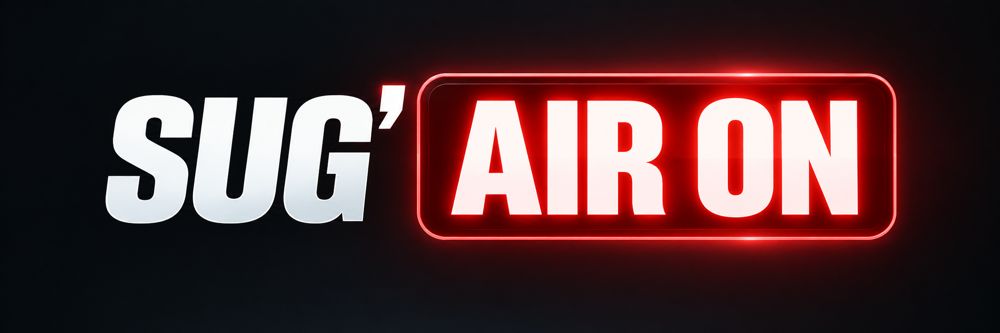

RÉALISATEUR · DIRECT
Réalisation en direct d’un journal télévisé

Synopsis
Dans le cadre de ma formation au BTS Audiovisuel du lycée Suger, réalisation en direct d’un journal télévisé destiné à être diffusé à l’antenne. Le projet reproduit les conditions d’une production télévisuelle en direct et nécessite de coordonner les différents éléments du plateau et de la régie afin d’assurer la continuité et la cohérence de la diffusion.
Ma contribution
Responsable de la réalisation du plateau du journal télévisé en direct. Pilotage des choix de réalisation et coordination des différents éléments nécessaires à la diffusion du programme à l’antenne.
J’ai également pris en charge la dimension artistique du projet, notamment la définition de l’identité visuelle du journal, le choix des couleurs, de la typographie et des différents éléments graphiques, ainsi que les choix techniques permettant de traduire cette direction artistique dans les conditions d’une réalisation en direct.
Ce projet m’a permis de travailler à la fois la réalisation en direct, la prise de décision dans un contexte contraint par le temps et la construction d’une identité visuelle cohérente pour un programme télévisuel.